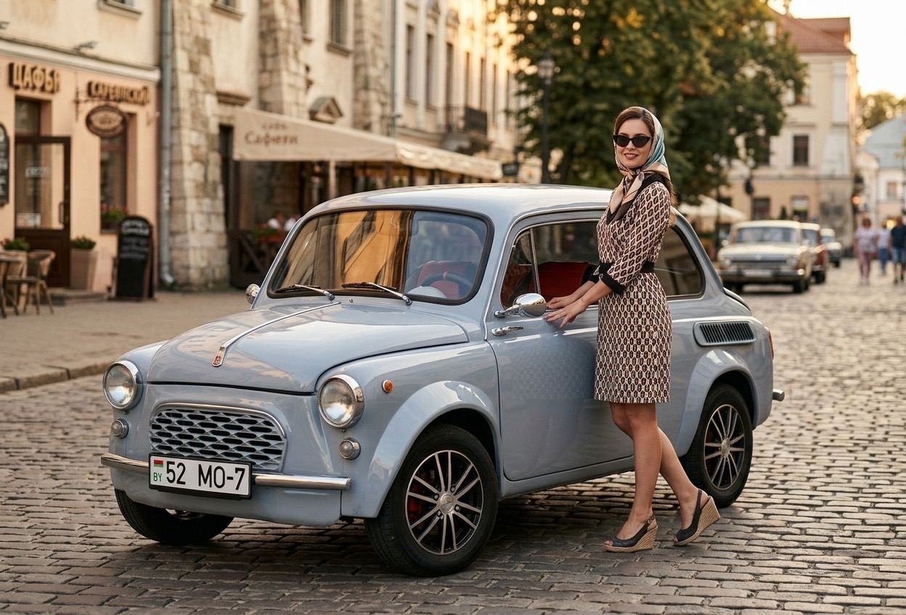
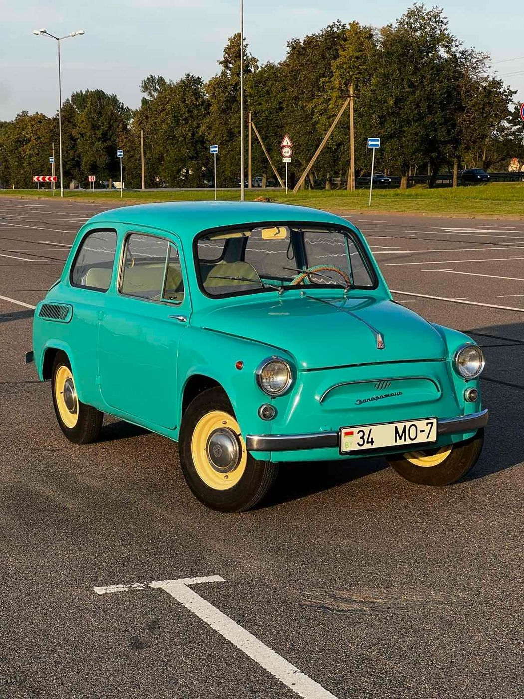
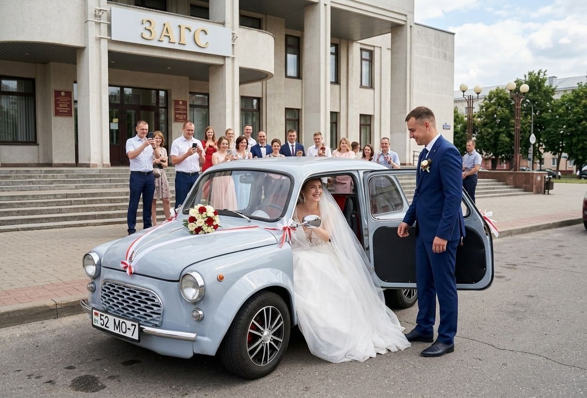
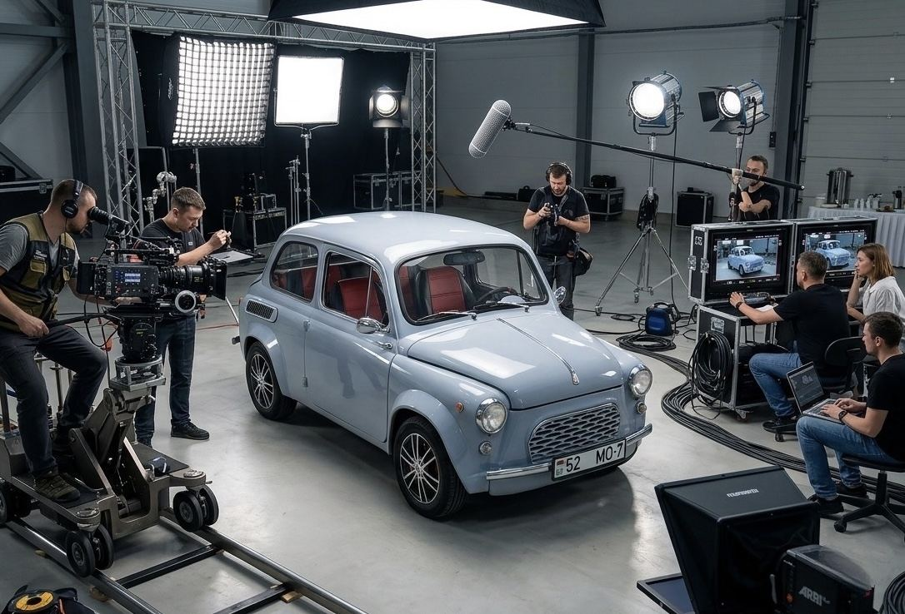

ХИТ

Фотосессии
Свадебные, индивидуальные и рекламные съёмки. «Запорожец» работает как главный реквизит — кадры получаются тёплыми и «с историей».
Подробнее
Тёплое ретро вместо холодного лимузина. Берём «Запорожец» на фотосессию, свадебный кортеж или съёмку — и день сразу становится атмосфернее.

«Запорожец» ЗАЗ-965 — тот самый «горбатый» из советского детства. Маленький, обаятельный и мгновенно узнаваемый: рядом с ним улыбаются даже те, кто пришёл «просто постоять для кадра».
Три повода взять «Запорожец» напрокат — а деталями займёмся мы.

Свадебные, индивидуальные и рекламные съёмки. «Запорожец» работает как главный реквизит — кадры получаются тёплыми и «с историей».
Подробнее
Кортеж, встреча молодых, красивый выезд из ЗАГСа. Украсим машину лентами и цветами под вашу палитру — приедем вовремя и без суеты.
Подробнее
Видеосъёмки, клипы, рекламные кампании, корпоративы и тематические вечеринки. Ретро-акцент, который запоминают гости и камера.
ПодробнееОба — ЗАЗ-965, но с разным характером. Выбирайте под задачу и настроение.

Восстановленный и надёжный: спокойно катает по локациям, встречает молодых и позирует камере. Идеален, когда важно, чтобы машина именно ездила, а не только стояла в кадре.
Коллекционный экземпляр: собран из оригинальных деталей, без новодела. Для тех, кому важна настоящая, аутентичная фактура — каждый винтик из своей эпохи. Такого второго в городе нет.
Интервью у «горбатого»: как он выглядит в кадре и почему рядом с ним день сразу становится теплее.
Чем дольше берёте — тем выгоднее час. Цена за машину с подачей по Минску.
Минимальный заказ — 2 часа. Точную стоимость с учётом выезда за город подскажем при бронировании.
Живые кадры со съёмок и мероприятий — как в вашей будущей ленте.
Машина сделала всю свадьбу! Гости фотографировались с ней всё утро, а кадры из ЗАГСа — самые тёплые в альбоме. Приехали минута в минуту.

Брали на индивидуальную фотосессию — восторг. «Горбатый» добавляет кадрам характер, которого не даст ни одна студия. Обязательно вернёмся.

Снимали клип, нужен был аутентичный ретро-автомобиль. Оригинальный экземпляр — просто находка, в кадре выглядит идеально. Спасибо за гибкость по времени.

Напишите нам — подскажем свободные окна, поможем выбрать машину и рассчитаем стоимость.